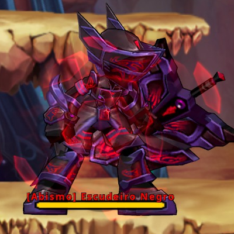

Ko-fi
Ko-fi
How does damage work?
First, I will demonstrate the mathematical formalism and data analysis method for the game's damage formula, and then I will explain in detail how it works.
Mathematical formalism of the damage formula
Several mathematical models were proposed for the in-game damage formula: linear, polynomial, exponential, and combinations of non-linear models.
A model that, in principle, makes sense within the game and managed to yield positive results was:
Or, in mathematical language, damage can be written as a function \( f: \mathbb{R}^4\to \mathbb{R} \) that maps a vector \(\mathbf{X}=(x_1, x_2, x_3, x_4)\), \( \mathbf{X} \in \mathbb{R}^4 \) and returns a scalar:
This means the damage formula takes four factors into account for the calculation: Attack (\( x_1\)), Special Attack (\( x_2\)), Enemy Defense
(\( x_3\)), and the base damage your character deals with a specific attack (\( x_4\)).
To simplify reading, I will call variables \(x_1\) as \(x_{ATK}\), \(x_2\) as \(x_{SPA}\), \(x_3\) as \(x_{DEF}\), and \(x_4\) as \(x_{BASE}\)
To test the validity of this model, it would be necessary, first, to collect diverse damage data for each set of attack, special attack, defense, and base damage so that, subsequently, a multivariate analysis could be performed and the correction constant value obtained.
This form of analysis can be computationally very expensive, since we are dealing with four independent variables and a large volume of data. To bypass this problem, we usually start from a simpler model and make it increasingly complex and closer to reality.
Initially, the base damage and defense values were fixed, varying only the attack and special attack values; that is, the stats were changed for each test, but the monster and skill used were the same, making the analysis form much simpler and allowing the use of a data fitting method like least squares.
It was also interesting to adopt a form of "resultant attack", which would be the sum of attack and special attack. I called this "resultant attack" \(x_{RES}\). Thus: \(x_{RES} = x_{ATK} + x_{SPA}\).
I also coupled the defense and base damage to the correction constant \(k\), since, when using the same attack on the same enemy, the damage always remains the same. Thus, we have that the new correction constant is: \(k' = k \cdot x_{DEF} \cdot x_{BASE}\).
With this, the proposed model was simplified to a function \( f: \mathbb{R}\to \mathbb{R} \):
where the value of \(k'\) represents the coupling of the correction constant, defense, and base damage. Thus, since the only variables now are the "resultant attack" and the damage value we can see on screen, it became very simple to perform a statistical analysis of the resultant attack versus the damage dealt to the enemy. Thus, it was possible to obtain the value of this constant, and finally, it was possible to predict damage using any combination of attack and special attack.
However, while the analysis was being conducted, the famous Korean table was published. Thus, it was possible to decouple the base damage value from the constant \(k'\) and rewrite our damage formula so that publicly accessible information could be used.
The damage formula can be refined, and now, with base damage decoupled from defense, our new version of the experimental damage formula becomes:
where \(k'' = (1-x_{DEF})k\)
It is coherent to adopt a defense value as a number between 0 and 1, or between 0% and 100%. Thus, it is possible to isolate the value of \(x_{DEF}\) and think of it as a "defense constant" \(0\leq k_d \leq 1\), which changes only for different enemies: if the enemy changes, the defense changes.
In some cases, the value of \(k''\) showed alterations depending on the enemy. Well, our 'base postulate' is that the correction constant \(k\) is fixed, so the change in the value of \(k''\) depends only on the enemy's defense.
From this point, for the same skill, damage data was collected for various sets of attack, special attack, and distinct enemies. Several skills were used to generate a large variation in the value of \(k''\).
This strategy brought a very precise analysis for various values of \(k''\) and allowed the value of constant \(k\) to be found, and consequently, the defense of various enemy types.
It is important to emphasize that this mathematical model needed to be adapted and divided into three types of "damage sources": Skill Damage, Basic Command Damage, and Pet Damage. For each damage source, a correction constant is used. It was also necessary to adopt two types of defense used by enemies: common defense, which acts against basic commands and pet attacks, and special defense, which acts against skills. It is worth noting that special attack appeared to work only on skill damage.
The damage formula
Finally, the statistical and data analysis provided sufficient results to obtain the damage formula:
Additional factors
From this damage formula, it was possible to perform simple and individual tests to introduce each type of damage addition, such as damage buffs, taint resistance, back attack damage, critical damage, defense ignore, among many other effects. The game appears to use a very simple way to deal with different types of damage additions, which is based on a non-linear function with the product between each different type of damage addition; that is, the famous Multiplier! Those multipliers have been calculated as:
| \[k_{\text{crit}}=\frac{(150 + \text{%_crit_dmg})}{100}\] | \[k_{\text{buffs}}=\frac{(100 + \text{%_buffs})}{100}\] | \[k_{\text{back}}=\frac{130 + \text{%_back} }{100}\] |
| \[k_{aerial}=1.5\] | \[k_{\text{taint}}=\frac{(100 - \text{%_taint}+\text{%_resist})}{100}\] | \[k_{\text{debuff_def}}=\frac{(100-\text{%-debuff_def})}{100}\] |
| \[k_{\text{lv}} =\left\{ \begin{array}{cl} 1 & : \ \text{char_lv}-\text{monst_lv} \leq5 \\ \frac{100+2(\text{char_lv}-\text{monst_lv}-5)}{100} & : \ \text{char_lv}-\text{monst_lv} \gt 5 \\ \end{array} \right.\] | \[k_{enemy}=1\] |
where \(k_\text{crit}\) is the critical damage contribution to final damage (which shows that critical damage has a base value of 50% in the game); \(k_{\text{buffs}}\) is the contribution of all buffs (GC Club, Chase Point, Second Gear Ring, skill buffs, etc.) to final damage; \(k_{\text{back}}\) is the back attack contribution; \(k_{\text{aerial}}\) is the contribution of damage dealt to an airborne enemy; \(k_{\text{taint}}\) is the contribution of the taint debuff and taint resistance; \(k_{\text{debuff_def}}\) is the contribution of defense ignore debuffs; \(k_{\text{lv}}\) is the contribution of your character's level (not chase level) and the monster's level; \(k_{\text{enemy}}\) is the contribution of damage dealt to enemies with damage reduction buffs, or who possess some mechanism that alters how they receive damage.
The damage reduction buffs that enemies possess are also accounted for in the damage formula through a contribution \(k_{enemy}\). If this buff does not exist, the value is \(k_{enemy}=1\); otherwise, it works as follows:
| Buff | Correction | Observation | |
|---|---|---|---|
| Increased Defense | \(k_{enemy}=0.8\) | Applies to any damage source (basic commands, skill, or pet). | |
| Damage Reduction | \(k_{enemy}=0.7\) | Applies to basic command damage and pet attacks. | |
| Special Damage Reduction | \(k_{enemy}=0.7\) | Applies only to skill damage. | |
| Critical Damage Reduction | \(k_{\text{crit}}=\frac{(150 + \text{%_crit_dmg} - 150)}{100}\) | Reduces your critical damage by 150%. | |
| Aerial Damage Reduction | \(k_{aerial}=1\) | Makes aerial damage identical to ground damage. | |
| General Defense Increase | \(k_{enemy}=0.333\) | Applies to any damage source (basic commands, skill, or pet). | |
| Special Skill Defense Increase | \(k_{enemy}=0.1\) | Applies only to skill damage. | |
 |
Basic/Pet Defense Increase | \(k_{enemy}=0.1\) | Applies to basic command damage and pet attacks. |
At the end of the entire damage calculation, Hell Spear (\(HS\)) damage is added. It is possible to verify from the formula that Hell Spear benefits from NONE of the damage buffs, back attack, critical damage, etc. Because of this, Hell Spear ends up becoming a bad property for the absolute majority of the game's content.
However, Hell Spear temporarily alters the \(k_{enemy}\) value, causing some enemies to take much more damage from Hell Spear, but this works only for some very specific enemies, such as the Heart of the Absolute in Void 3: Nightmare.
There is also damage dealt to portals inside some dungeons, like in Abyssal Path. These portals do not follow the damage formula; they always take a pre-defined constant damage.
The final formula
Unifying all these corrections, the game's damage formula can be written as:
Final Considerations
There are some important conclusions to be drawn from these values:
-
'Hidden' base values:
Some properties have a hidden value within the game. When you create a brand new account, your critical damage will be 50%(\( \text{normal damage} \times 1.5 \)), even if you have 0% in your stats.
Another property with a hidden value is back attack. Its base value is 30% (\( \text{normal damage} \times 1.3 \)), even if you have 0% in yourt stats.
-
Attack Equivalence:
Attack and Special Attack have the same weight for skills. Gaining 100 Attack or 100 Special Attack will result in exactly the same final damage increase for your abilities.
-
Stat Saturation:
The more you invest in a single stat, the lower the actual perception of gain. For example: adding 10% critical damage when you have 500% represents a gain of \( \frac{10}{500 +150} \approx 1.5 \text{%} \) final damage. However, adding the same 10% when you already have 900% represents only \( \frac{10}{900 + 150} \approx 0.95 \text{%} \) final damage. Because of this, players in the endgame (1000%+ critical damage) feel little difference when increasing their stats.
-
Buff separation:
On most games, damage buffs are multiplicative, which means they all have their own contribution to the damage composition. For example: \[ \text{final_dmg} = \text{raw_dmg} \times (1 + \text{boss_dmg}) \times (1 + \text{skill_dmg}) \times (1 + \text{skill_tier_dmg}) \times \cdots. \]
This doesn't happen on Grand Chase, however. Different buffs are additive (instead of multiplicative), which means a 10% All Skill Damage buff behaves EXACTLY the same as 10% Damage to Bosses, no matter how much of other buffs you have.
The difference between buffs rely simply on where they are applied: Damage to Bosses on bosses only, All Skill Damage on skills only and so on.
-
Buff Dilution:
Buffs in the game add up with each other before multiplying damage. Because of this, a 10% buff does not increase your final damage by 10% if you already have other active buffs. If you already have 50% accumulated bonus and receive another 10%, the actual perceived gain will be only \( \frac{10}{100 + 50} \approx 6.66 \) in final damage.
-
Damage Percent:
On most games, it is common to present damage values as 'this skill causes \(309 \text{%}\) physical damage', for example. Notice the damage formula has a correction constant ( \(0.007\) for skills, \(0.0168\) for basic command and \(0.000477148\) for pets). It is possible to rewrite the base damage using this value, for example:
The skill Blame Buster does \(364.864\) base damage. We can rewrite it as: \(364.864 \times 0.007 \times 100 = 255.4048 \text{%}\) (Attack + Special Attack).
Finally, instead of needing to worry about working with all this math, you can simply use my damage calculator!